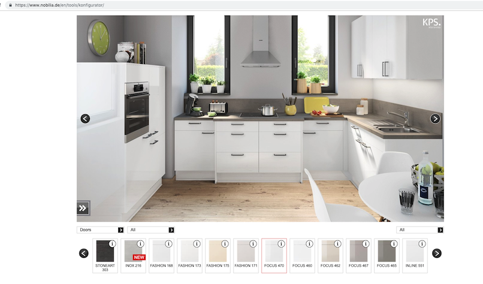

物联网应用路线图
摘抄
什么是IOT
站在科学家的立场上来看，要想发现未知的事实，首先应该进行调查和研究，这才是正确的方法。但在商业的世界中，不管在任何情况下，目标（知道挖出来的东西有什么价值）都是不可或缺的，这一目标决定了大数据潜在的价值。
如果要对“IoT”下一个定义，那就是“将所有物品的数据连接到互联网上，并进行有效利用的状态”。
要想利用IoT使商业活动取得成功，首先必须思考的关键问题就是“拥有价值的东西是什么”。
想要灵活利用IoT业务时，首先需要思考的问题是，在使用传感器对物品进行识别的业务与上层系统融合之后，能够产生什么样的新业务。接下来才是思考具体实现这一目标需要用到什么样的技术。
从目前的IoT事例来看，面向普通民众的IoT和面向商业活动的IoT之间，几乎没有任何关联性。对于企业来说，此时面临着两个方面的选择。一个是等待IoT普及，先对整体情况完全了解之后，再考虑是否将其作为自己公司的商业活动展开；另一个则是通过自己公司的商业活动为IoT普及尽一份力，最终在未来业态之中的某一部分，扮演先驱者的角色。相信在不同的企业文化影响下，企业会做出不同的选择，但从互联网服务的前车之鉴来看，如果不采取第二种选择，那么待IoT商业模式成熟之后，再想获得市场份额将是十分困难的事情。
软件的关键不在于编写代码，而在于将软件所能够实现的状态以服务的形式提供给用户，并且以此来引领社会的发展。从现在的状况来看，说软件等于服务也不为过。
IoT的案例和关键
事实上，在这个案例中，最重要的部分在于，设备将使用者没有意识到的数据作为“输入”收集了起来。特别是睡眠时的数据，就连身为数据发射源的使用者都对这些数据毫无记忆，但通过对这些数据进行收集和整理，就产生了“知道原本不知道的东西”“看见原本看不见的东西”的效果。
"看见"在技术上被称为“数据的可视化”，它是IoT及其他利用IT实现的业务以及生活的改善之中最初的关键。
集中力量实现可视化
选用能够在不接触观测对象且与其相隔一定距离的情况下，仍然能够收集数据的传感器尤为重要。
将原本人类无法发现的图像可视化，而且与完全依靠人工相比效率更高，这就是其价值所在。也就是说，无人机的机动力等同于价值。
第一次产业革命是煤炭带来的蒸汽机的诞生，第二次产业革命是石油与电力带来的大量运输与生产改革，第三次产业革命是IT带来的自动化。而在“工业4.0”项目中比较具有代表性的模型，就是德国的柏丽公司。柏丽公司主要为家庭客户提供定制的厨房整体解决方案。因为定制产品都是品种繁多但生产量较少，所以与品种较少但能够大量生产的产品相比，具有生产效率低、产品价格高的缺点。柏丽公司为了降低成本提高生产率，将从接受订单到生产、产出的过程全部自动化。简单的说，就是对工厂进行适当的改造，使其能够更适应多样化的订单。
在这一案例中，“输入”大体上可以分为两类。一个是基于订单的定制化厨房设备，这是相当多样化的。另一个是进行组装之前的所有零部件的识别信息。在将用于组装最终产品的零部件从所有的零部件之中挑选出来的同时，就需要给这个零部件指定相应的信息。
"处理"相当于零部件制造、零部件与半成品的运输，以及按照订单要求对组装工程进行自动的调整。“输出”就是各不相同的定制化厨房设备的最终产品。从价值的角度来看，柏丽公司帮助每一位不同的顾客，定制符合其要求的厨房设备，也就是满足了个人需求，同时还能够使定制产品与品种较少但大量生产的产品拥有相同的交货期和价格。
我认为，通过使不同的内容可视化，进一步提高抽象度，就可以对共同点进行整理。
IoT解剖学 －－ 框架与蓝图
将现实世界的数据输入到IT设备之后，经过IT设备的处理加工，使其再次回到现实世界，并且对现实世界造成影响。
人类为什么使用计算机呢？答案很简单，因为计算机的计算速度远远高于人类而且绝对准确。
商业活动与计算机之间的关系，就是从将人类的业务转变为程序，并且将其交给计算机来处理的时候开始的。
克服距离的障碍是社会发展的关键。
像候鸟那样先采取行动，然后根据实际情况不断进行修正，就是近代系统科学的原理原则。
当我们追溯到控制论和信息物理系统的时候，就会发现在IoT之中，有一个很容易被忽视的地方，那就是“反馈”。所谓反馈就是基于信息采取行动，行动对现实世界产生影响，影响的结果再作为信息返回，对行动产生影响的一种循环。
综上所述，IoT、大数据以及人工智能，都在过去呈周期性地掀起过热潮。这种现象不只有大数据和人工智能，在IT领域也是随处可见的现象。与其说热潮在被遗忘之后又卷土重来，不如说在计算机诞生的同时，基本的概念就已经彻底形成，只是因为受当时技术水平的限制，导致其难以实现或者实用化，一旦在其他方面出现新技术或应用形态的潮流，人们就会再次回到原点，对目标进行分析。
从将新关键词应用于商业活动的观点上来看，当新关键词出现的时候，对其技术细节和案例进行调查和分析，思考如何将其整合进自身业务活动之中的过程固然重要，但更重要的是把握计算机诞生初期的基本理念，根据自身公司想要实现的最终目标，对新关键词的实现进行验证，然后将其与自身目前商业活动所追求的问题解决能力进行比较，找出“能够从中确实得到什么”“应该进行怎样的尝试”。
不要被IoT案例和相关技术所束缚，如果能站在更高的视觉，思考什么是自己本来的目标，就一定能够发现自身的商业活动应该以什么作为目标最为合适。
人类的视觉会对其自身的理解和判断产生极大的影响，所以就算数据没有被整理成具体的信息，但只要将“没有数值化的东西数值化”“将数值归纳整理成图表”，人类就可以自行从中找出有用的信息。
在考虑将IoT应用到自身商业活动之中的时候，将可视化作为目标之一是非常重要的。
可以说正是因为反馈，包括IoT在内的很多事情才有价值。
在这个世界上，经常会发生一些我们意想不到的事情，而反馈则给了我们对错误进行修正的机会。
需要根据结果进行修正的不只是接下来的行动，甚至还有可能包括模型本身。
尝试、确认结果、思考、进行下一次尝试这一系列的过程就是“学习”，这也是人工智能的基本概念。就像在现实世界中，也有各种各样的变化一样。只要导入包括传感器、模型、控制以及反馈在内的全部结构，不但可以看见原本看不见的东西，提高工作效率，还可以创建出一个能够根据实际情况，自己采取行动、主动改变思考方法，使自身适应环境变化的体制。这种能够自动适应环境的行为在世界体系中，被称为“自律”。IoT的终极目标，就是实现自律。
要想在商业活动中占据优势地位，绝对离不开使数据可视化的构造。
能够收集到人类无法收集的数据，削减原本需要消耗大量时间的工程所需的时间和成本，也可以在商业活动中发挥作用。
如果将像IoT这样的新潮流只用来提高工作效率，那未免太浪费了。
现在消费者变得越来越多元化，业界竞争也越来越激烈，如果只以现在的顾客作为服务对象，将很难在激烈的竞争之中生存下来。必须在消费者成为自己的顾客之前，就对其进行分析。
IoT的终极目标就是能够对市场或者行业进行控制。
将IT应用于商业环境之中的主要目地，就是解决问题，但如果连问题是什么都不知道，那解决又从何说起呢？
不同业种灵活利用IoT的方法
IT设备输出的数据被称为“日志”，要想将日志中的数值与相关事项进行比较，只要将这些数据整理成图表即可，人类自然可以根据图表的内容做出判断。所以在可视化的前期阶段，必不可少的处理就是通过检索将日志中的关键语句挑选出来。除此之外，还有把握日志内数值的变化趋势，将是否存在超越预设基准值的可能性显示处理并进行追加处理。上述功能只要使用一个叫做商业智能（Business Intelligence, BI）的软件，就可以轻松实现。
能够将之前无法同时获取的数据进行比较来发现其中的异同，并且从大量的数据之中挑选出重要的信息，都可以极大地提高人类的工作效率。特别是人类并不擅长发现事物之间的相互关系，但计算机却可以仅凭数字的罗列就发现存在于其中的因果关系，所以人类可以利用IT进行分析来发现事物之间的关联性，从而对自身的业务进行改善。
在对直接从消费者身上获取的数据进行分析的时候，因为最终目的是将消费者按照一定的特征划分为不同的小组，并且以此为依据采取商业行动，所以经常采用统计分析的方法。
店铺和营业员的业务日志使改善业务的宝库，但因为大多数是手写的，而且没有固定的格式，所以常常被埋没于员工的笔记本和个人电脑里。如果将这些信息转化为能够解读的文字数据，就能够轻而易举的找出其中频繁出现的单词和集中于某种商品上的顾客需求。
只要能够明确数据于数据之间存在的相互关系，就可以使人类有新的发现，而这一切都可以通过统计分析的方法来进行处理。
因为企业方面提供的信息不是固定的而是可以改变的，所以一旦模型确立之后，就可以主动向采取特定行为模式的顾客提供具有针对性的信息。
现在市场要求的却是在开放的环境下对呈水平状态分散的局部进行动态重组的能力。
制造业的另一个课题，是对顾客管理与市场开发的强化，也就是服务型课题。在传统的制造业模型之中，当制造出来的商品被销售出去之后，就很难再获得与之相关的信息。
对于依靠革新来创造新价值的制造业来说，了解产品的使用情况尤为重要。
现在生产企业更积极地为客户企业提供服务型业务，不但能够帮助客户解决产品使用上的问题，还能够帮助客户削减成本。在为客户企业的商业活动做出贡献的同时，还会站在客户的角度，准去地把握自己公司产品的问题所在和改善要点。
在工厂模型中消除系列化，以及在服务型模型中帮助客户企业进行商业活动的行为，都跳脱出了传统制造业的商业模型和体系框架，具有在开放环境中获得的创造性。
在很早以前，制造业为了对品质和供应链进行管理，就开始积极地收集数据。但是，由于这些数据从获取到可视化，全都是以生产线为中心，所以在空间、时间以及物理上，还残留有许多看不见的部分。从空间的意义上来说，对“顾客如何使用产品”这一情况的把握就不够充分；从时间的意义上来说，因为无法及时把握顾客的情况，也很难把握产品的生命周期；再从物理的观点上来看，虽然能够作为个体被识别的东西很容易对其数据进行跟踪，但气体和液体却没有一个固定的单位使其便于识别。
基于从工厂获取的各种数据进行的业务改善，绝大多数情况下，都只停留在获取数据的工厂。要想基于现场的实际情况对总公司层面的经营进行改善，需要综合多个工厂的数据，但这个数据却难以获取。要想获得这些数据，首先要做的，就是使总公司的计划层数据与相当于各工厂实行层的系统数据结合到一起。只有做到这一点，才能够对从电力消耗的成本到经营最优化的整体情况进行详细的分析。
另一种方法是在公司内部成立一个专门基于数据进行业务改善和分析的部门，给予这个部门访问相关数据的权限。这个部门的职责，就是准确地提出公司需要改善的方向和方法，只要这个部门运转顺畅，就能够持续发挥其应有的作用。
如果生产商能够通过IoT及时地把握销售店铺的库存情况，就可以了解市场对产品的接纳状况。也就是说，生产商可以通过把握市场状态和模型，预测今后可能出现的订单信息。
在状态的可视化阶段，将像设计技术和生产技术等这些由人掌握的技术的好的部分可视化，也非常重要。
IoT基于将现实世界的所有活动全部数据化的思考方法。
到目前为止，制造业利用IoT进行的改善几乎都停留在最优化的阶段。但如今美国通用电气提出的“产业互联网”，以及德国政府提出的“工业4.0”，都将服务这一从来没有被制造业当作商品的内容定义为商品，寻求与作为产品用户的顾客共享数据的方法。
如果对这一状况进行更加深入的思考，还可以发现产品在送到用户手中的时候只不过是半成品。只有根据用户的使用情况不断对软件进行改良和升级，产品才能变成真正的完成品。事实上，现在很多工业产品都像计算机一样，通过软件来实现诸多功能，甚至可以说只要更换一下软件，就可以使其变成另一个产品。
也就是说，产品在出厂阶段只完成了一半，等用户的使用情况以数据的形式反馈回来之后，生产企业就可以根据产品的实际使用情况，进行节能优化和保养优化，从而使其根据用户的使用习惯向其提供最适合的使用方法和软件的“制造服务一体化”成为可能。这对于通过产品开展商业活动的用户来说，就相当于生产企业为其提供了“特别定制”的产品和服务。
一直以来，制造业的改善重心都放在削减成本和缩短时间上，但将顾客信息加入到价值链之后，就可以进一步扩大改善的对象范围。具体来说，就是将范围扩大到与价值链相关的所有企业。这也可以说使由IoT带来的价值。
如果对顾客的言辞进行分析，找出哪些单词出现的频率高，哪些单词相互之间的组合比较频繁，就可以搞清楚究竟发生了什么以及造成这个结果的原因和前提条件，从而理解商品与顾客的状态。
在一切与人类相关的事业中，安全问题都是最重要的课题。
IoT的终极形态，就是在IT的世界创造出一个现实世界的镜像，将现实世界应该采取的行动最优化之后输出出来，向现实世界提示经过仔细分析之后的结果。
曾经有一段时期，技术是推动经济发展的主要力量，但这种现象并不是永远持续的，正如前文中所说的那样，当技术满足了一定程度的需求之后，人们便不再追求更高的技术。
总结
仍然是工业革命
公认的三次技术革命，分别是蒸汽机为代表的第一次工业革命，石油、电力带来的第二次工业革命，以及现在方兴未艾的信息革命。实际上我看到也有地方称物联网为第三次产业革命，但是以我看来它更多的是对于第三次工业革命的深化。之前我一直以为信息革命对于世界的影响不如前两次，但现在看来完全够资格。信息技术分为计算机跟网络两个实体，分开说。
我们人类文明之间的组织效率差异很大一部分来源于文字的产生以及记录媒介。文字的产生本身就很少见，而之后我国直到公元1000年的宋才出现活字印刷，而西方直到1400年左右才产生。计算机使得这种信息的储存产生了质变。只需要一块硬盘就能把之前几千年的书都存起来，而且还不容易损坏。计算机比人类记忆力更好，计算能力更强，而且不会出错，成本低。
人类社会的产生是由于人口太多，需要一个制度来管理。而人口太多、幅员太广又限制着人类组织的规模。例如古代用驿站来传递信息，那么中央对于边疆的控制就会很弱；包括商业活动在内的其他社会活动也就效率很低。网络使得即使在地球的两端，也可以跨越时空的低成本的进行信息的传递，极大的促进来社会的发展。因此，以后大型公司将会比小型公司具有更强的竞争力。
IoT
IoT基于将现实世界的所有活动全部数据化的思考方法。
实际上，现在最火的几个概念，物联网、大数据、人工智能在当年计算机诞生之初，其基本概念就已经形成，但是由于受到当时硬件条件的限制，导致想法难以产品化。而随着硬件的逐渐提升，就会发现这些概念又或火了起来。之前的互联网革命，然后的移动互联网，再到今天的物联网，实际上也是如此，是一个随着制作工艺推进而带来的对于信息技术革命深化的过程。如何能够把外界信息输入到IT的世界里进行处理，然后再将输出映射到现实世界中，一直是IT的本质，因为IT的内环境里，效率是如此的高，能够穿越时空，甚至能够根据以往的数据预测未来。
这张图是作者对于IoT如何为现实提供服务的一个概述。文字描述就是：
- 通过传感器或者其他终端将信息收集起来，并通过网络发送到云端。这时的数据是原始数据，多而杂。
- 根据某些逻辑或模型对数据进行处理，将“数据”变为更具有目地性的“信息”。
- 可视化展示结果。人类不善于总结信息，而通过可视化的结果，“没有数值化的东西数值化”“数值归纳整理成图表”，人就可以更好地得出准确的结论。
- 根据模型或其他大数据的计算技术计算出更优化的配置，并应用到现实中。
- 重复获取、收集、传送、分析、可视化、模型化、最优化、控制、反馈，周而复始。
现在的大部分公司都在努力达成1-3,然后去影响公司的决策、产出等。实际上第四步才是目前IoT不同于之前的地方，能够让系统根据模型自动的映射到现实当中，并不断改进自身（当然了，如果前三步搞得好也已经可以在竞争当中立于不败之地）。因为前三步实际上是对于现实的一个反馈，而第四步却能更进一步的预测、影响现实的活动。
思考
公司的存在意义在于提供服务给客户，以此获得利润；在这个过程中，又需要面对来自同行业竞争对手的挑战。作为这个市场的一员，任何人或公司都不可能置身事外。如果不能参与进去，等待自己的只能是连汤都喝不上。抛去各个公司不同的服务方向，每个公司都需要：
- 准确的抓住客户、市场的需求，这样才能有的放矢，不会整个大方向都错了，效率越高反而越是错误（生产前对于用户需求的收集）
- 高效的组织管理能力，也就是追求最低的投入产出比（生产中对于产品质量的把控、生产效率的提高）
- 根据用户反馈灵活的调整生产流程，更好的拥抱市场（产品产出后的反馈调整）
一直以来，制造业的改善重心都放在削减成本和缩短时间上（也就是第二点），但将顾客信息加入到价值链之后，就可以进一步扩大改善的对象范围。具体来说，就是将范围扩大到与价值链相关的所有企业。这可以说使由IoT带来的价值。

传统的制造业需要用大规模的生产同质的产品来平摊每个产品的成本，但是这必然会带来一个问题，就是企业并不能确信自己的产品确实是顾客需要的；即使知道是个趋势，也不能预测需要生产多少。德国的柏丽公司也需要面对这个问题，因为他们的主营业务是家庭厨房的整体解决方案。问题就是每个用户的需求太碎片化了，每家的房型不同，主人的品味、需求也不同，因而很难统一的做出一款或几款产品来满足整个市场。定制产品品种繁多但生产量较少，所以与品种较少但能够大量生产的产品相比，具有生产效率低、产品价格高的缺点。柏丽公司为了降低成本提高生产率，将从接受订单到生产、产出的过程全部自动化。简单的说，就是对工厂进行适当的改造，使其能够更适应多样化的订单。从价值的角度来看，柏丽公司帮助每一位不同的顾客，定制符合其要求的厨房设备，也就是满足了个人需求，同时还能够使定制产品与品种较少但大量生产的产品拥有相同的交货期和价格。因此，相对于传统制造业公司，柏丽公司把1 、2做到了极致，也因此可以说是一个伟大的公司。
而对于3,可能不是所有公司都容易做到的，但是对于IoT产品公司，却是一个优势。传统公司在把产品贩卖到市场上之后就基本结束维护了，剩下的最多就是提供保修等服务，与用户的交互止步于此。而IoT公司却可以把用户收到的产品认为是一个“半成品”，根据用户的使用情况不断对软件进行改良和升级，不断进行完善，提供更加优质的服务，为用户带来价值。